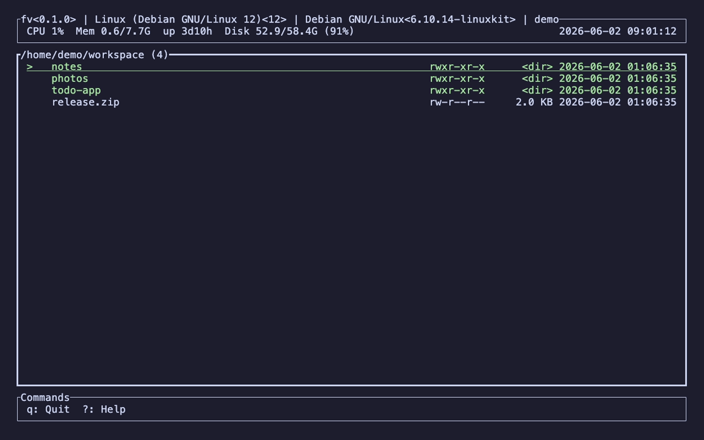
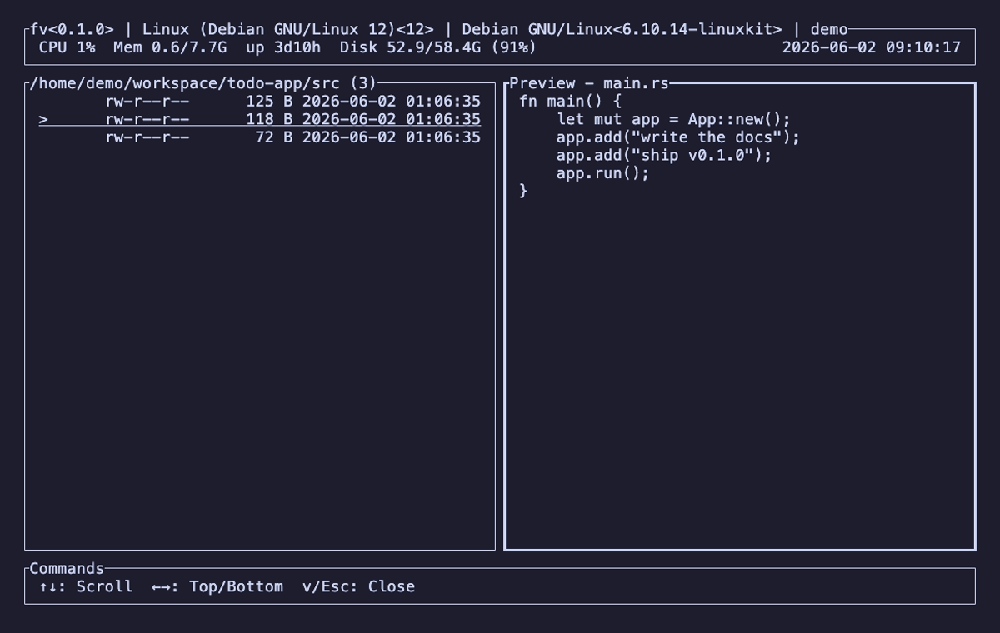
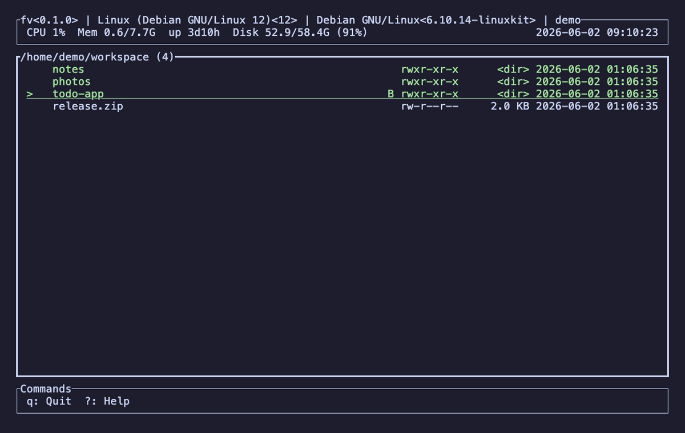

$ fv
A fast, keyboard-driven file manager that lives in your terminal.

Built for people who live in the terminal.
Runs in your terminal
No GUI needed—same experience over SSH or locally, anywhere a terminal runs.
Fast & lightweight
Built in Rust. Snappy startup and navigation, even in large directories.
Simple UI, rich features
A clean single screen packs in file ops, preview, grep, bookmarks, and more.
Up and running in seconds.
Install with Homebrew, or grab a prebuilt archive from GitHub Releases.
Homebrew
macOS · LinuxmacOS (Apple Silicon) and Linux (x86_64). The macOS build is signed & notarized.
$ brew tap pkshimizu/tap $ brew install fv
GitHub Releases
ManualDownload the archive for your platform, extract it, and put the fv binary on your PATH.
# download from releases, then $ tar -xzf fv-*.tar.gz $ sudo mv fv /usr/local/bin/
Everything, one keystroke away.
A complete map of fv's keybindings, grouped by what you're doing.
File list & navigation
File operations
Copy, move, delete and zip run asynchronously with a progress indicator—press Esc to cancel.
Search & preview
Filter (/) hides non-matching files to narrow the list and operate on just those; search (f) keeps the full list and only jumps the cursor.
More

